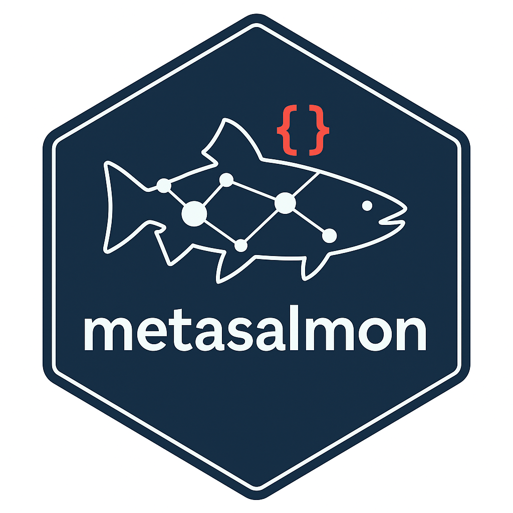

Catch MetaSalmon errors and warnings selectively
Source:R/conditions.R
metasalmon_conditions.RdPackage-authored cli_abort(), cli_warn() and rlang::abort() emissions
carry a common hierarchy. Their messages, existing specialized classes,
code fields, parent conditions and base error/warning inheritance remain
intact. Catch classes instead of parsing human-readable message text.
Hierarchy
metasalmon_condition is the package root. Errors inherit from
metasalmon_error; warnings inherit from metasalmon_warning.
Four emitting subsystem families add
metasalmon_<family>_error or metasalmon_<family>_warning:
validationDictionary, schema, SSSOM, decomposition, observation, extension, reproducibility and semantic-review file/row contracts.
llmThe deprecated model adapter, chat path and its deprecation warning. These classes do not authorize or trigger a model call.
publicationKNB/DataONE, EML/EDH/Darwin Core exports and GitHub publication helpers. A family describes the emitting subsystem, not a promise that every cause is a remote service failure.
retrievalVocabulary, ICES and ontology retrieval helpers.
Other emitting modules use the package error/warning base. Existing
specialized classes precede these bases, including
metasalmon_semantic_review_<code>, metasalmon_semantic_review_error,
metasalmon_llm_deprecated and deprecatedWarning.
Boundary
Dependency errors, base-R developer assertions and stop(condition)
rethrows keep their original identity. Informational signals such as
metasalmon_search_failure retain their existing protocol. The hierarchy
covers the package-owned cli/rlang emissions above; it does not relabel every
error that can leave a public call. Broad error/warning handlers continue
to work. Put specific handlers before broad handlers in tryCatch().
The two package-authored base warnings (missing BioPortal key and failed
metadata-backup restore) also carry these classes while retaining
simpleWarning, the same message and a null call. They remain muffleable
through muffleWarning.
Examples
# The invalid input is rejected before an ICES network request.
tryCatch(
ices_codes(""),
metasalmon_retrieval_error = function(cnd) "Choose an ICES code type.",
metasalmon_error = function(cnd) conditionMessage(cnd)
)
#> [1] "Choose an ICES code type."